Manuel d’installation
Prérequis
Afin que les versions coïncident ainsi que le matériel, vous devez avoir:
- Un poste fonctionnel
- Raspberry pi 3
- Carte SD(16GB minimum) + adaptateur
- Accès à internet
Téléchargement de l’OS Raspbian 32 bits
Installation de Raspberry pi Imager
Pour commencer, téléchargez l’application Raspberry pi Imager, cela permettra de mettre l’OS sur la carte SD.
Pour cette étape, je l’ai fait sur un poste Windows, de ce fait j’ai juste téléchargé leur installeur. Une fois l’application téléchargée, il faut l’installer.
Faites un double-clic sur l’exécutable téléchargé.
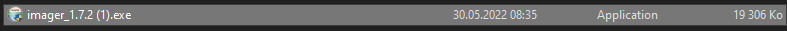
Une fenêtre s’ouvrira en proposant de démarrer l’installation. Cliquez sur le bouton Install.
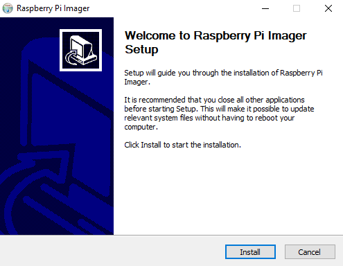
L’application s’installera. Une fois l’installation terminée, le programme vous proposera de démarrer l’application.
Cliquez sur le bouton Finish.
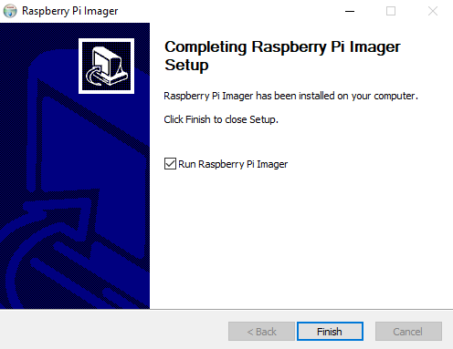
Utilisation de Raspberry Pi Imager
Une fois l’application démarrée, vous devez cliquer sur le bouton CHOISISSEZ L'OS

Cela ouvrira une fenêtre vous permettant de choisir l’OS que vous voulez installer sur le raspberry pi.
Pour ma part, j’utilise celui proposé en premier, Raspberry Pi OS (32-bit).

Ensuite, cela vous ramènera à nouveau sur la page principale, et cliquez sur le bouton du milieu CHOISISSEZ LE STOCK....
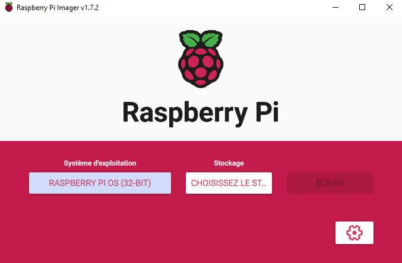
Veuillez sélectionner le lecteur sur lequel vous voulez installer l’OS. Pour ma part, je ferais l’installation sur Kingston UHSOO uSD USB Device - 15.9 GB.
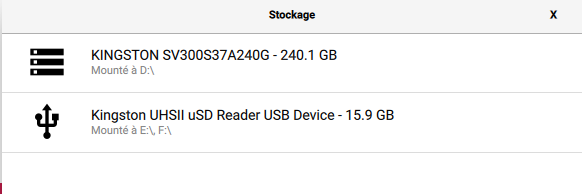
Et enfin de finir avec cette partie, cliquez sur ÉCRIRE afin de démarrer l’installation.
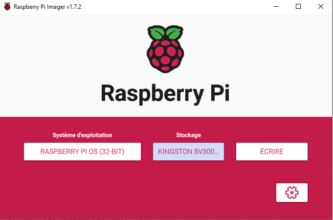
/!\ Attention /!\ Vérifiez qu’il n’y ait aucune donnée dans le support où vous allez installer l’OS. Toutes les données seront écrasées!
Si vous n’avez rien d’important dedans, alors vous pouvez cliquer sur le bouton OUI, sinon cliquez sur le bouton NON et prenez le temps de sauvegarder vos données.
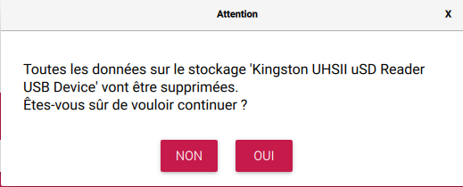
Maintenant, vous n’avez plus qu’à attendre la fin de l’installation.

S’il n’y a eu aucune erreur durant l’installation, vous aurez ce message vous indiquant que l’opération est terminée et avec succès.
Vous pouvez à présent cliquer sur CONTINUER et fermer le programme.

VNC Server
Sur le raspberry pi, téléchargez REALVNC.
Pour cela, il vous suffit de sélectionner Raspberry Pi et d’ensuite cliquer sur le bouton Download VNC Server.
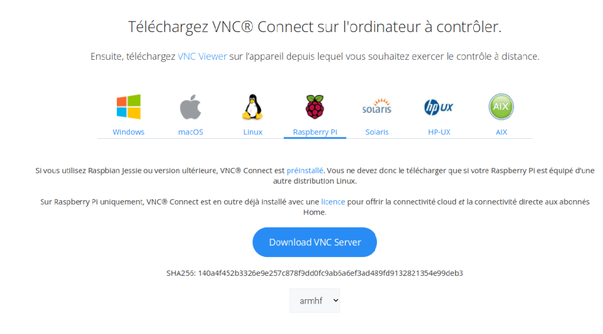
Une fois le téléchargement terminé, allez dans votre dossier téléchargement et exécutez le fichier d’installation.
Un message est censé apparaître, appuyez sur le bouton Installer.
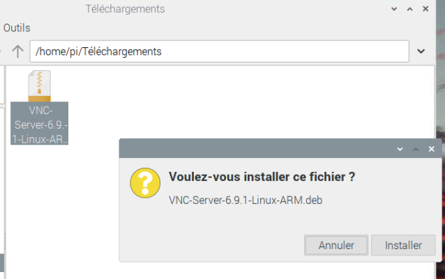
Après une petite attente, une nouvelle fenêtre s’ouvrira, Authentification. Insérez le mot de passe du raspberry pi, par défaut le mot de passe est: raspberry
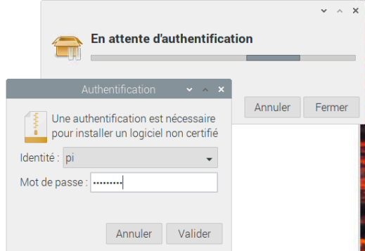
Une fois l’installation terminée, allez sur le menu du raspberry, Préférences -> Configuration du Raspberry Pi.
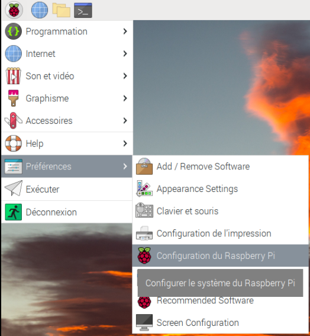
Ensuite, cliquez sur le bouton en face de VNC. Cela activera VNC Server et permettra ainsi la connexion au Raspberry via VNC.
Dès que c’est fait, cliquez sur Valider.
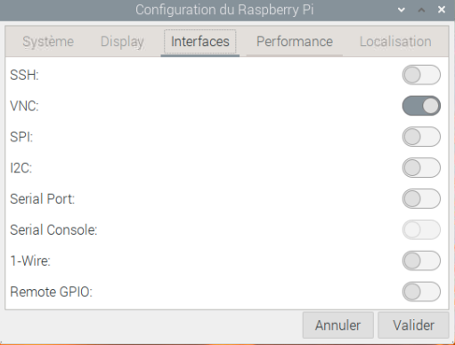
Une fenêtre vous indiquant qu’il faut redémarrer va apparaître. Cliquez sur le bouton Yes afin de redémarrer.
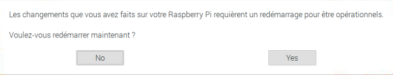
Et voilà votre VNC Server est configuré et accessible!
Pour vous connecter sur votre raspberry pi, ouvrez un terminal de commande et tapez:
ifconfig
Appuyez sur enter.
Au début de la réponse, il y a l’adresse IP de votre Raspberry. La mienne est 10.5.51.36.
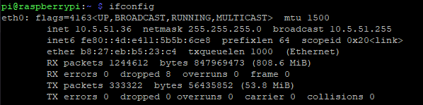
Connaître l’adresse IP est nécessaire afin de pouvoir se connecter sur la machine qui contrôlera le raspberry pi.
VNC Viewer
Installation
Maintenant que le VNC Server est installé et configuré, nous pouvons nous lancer sur l’installation du VNC Viewer.
Pour commencer, allez sur REALVNC et lancer le téléchargement.
Choisissez votre système d’exploitation. (Windows personnellement)
Cliquez ensuite sur Télécharger VNC Viewer.
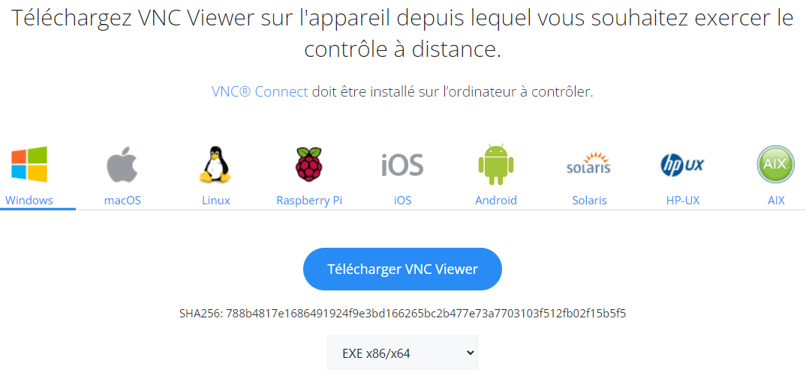
Allez sur l’installateur que vous avez téléchargé et exécutez-le.
Une fenêtre d’installation va apparaître, choisissez le langage que vous voulez utiliser. Une fois le choix effectué, appuyer sur OK.

Appuyez sur le bouton Suivant pour commencer l’installation.
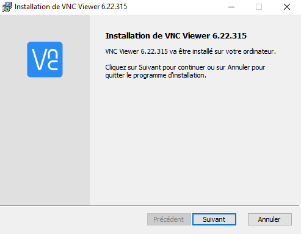
Lisez et acceptez les termes du contrat de licence.
Ensuite, appuyez sur le bouton Suivant.
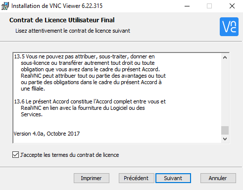
Si vous ne voulez pas modifier l’endroit d’installation, appuyez directement sur Suivant.
Sinon modifier l’endroit ou l’installer et appuyer ensuite sur Suivant.

Une fois que vous avez terminé la configuration, cliquez sur Installer.
Une fenêtre peut apparaître sur votre écran, appuyer sur le bouton Oui.
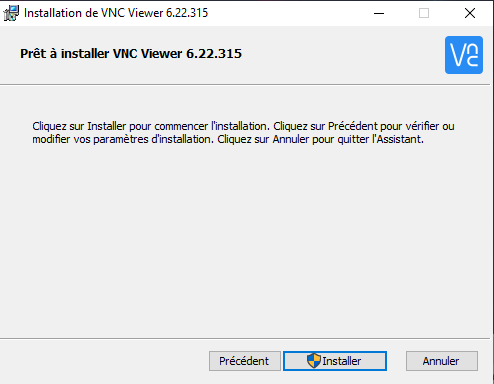
La fenêtre d’installation devrait apparaître, il ne reste plus qu’à attendre.
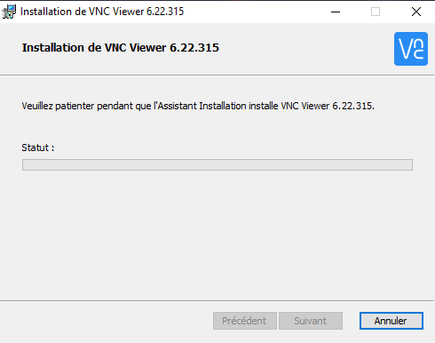
Une fois l’installation terminée, si tout s’est bien passé, il ne vous reste plus qu’à appuyer sur Terminer.

Utilisation
Ouvrez VNC Viewer, l’application devrait ressembler à celle que j’ai.
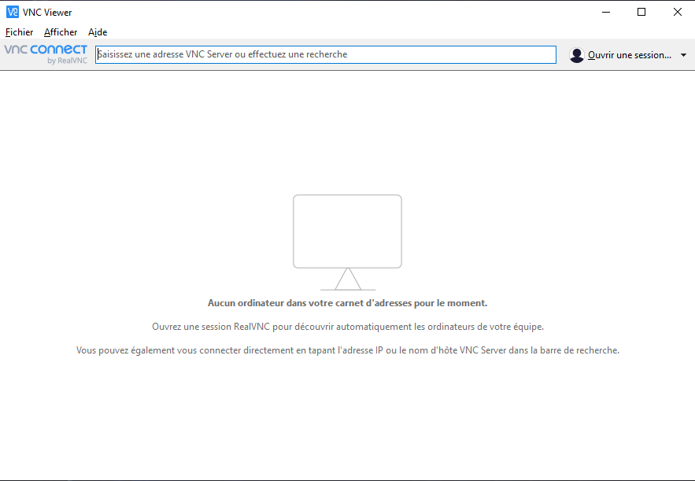
Faites un clic droit sur le fond. Le menu contextuel devrait apparaître.
Cliquez ensuite sur Nouvelle connexion....
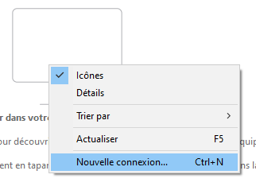
La fenêtre Propriétés devrait s’ouvrir.
Remplissez le premier champ (VNC Server) avec l’adresse IP du Raspberry vu ci-dessus.
Une fois l’adresse entrée, appuyez sur le bouton OK en bas à droite.
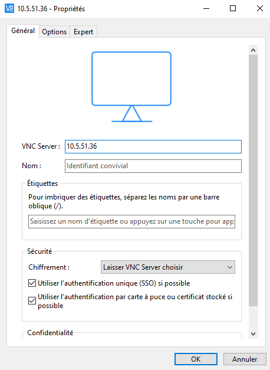
Une connexion avec l’adresse IP que vous avez rentrée est censée apparaître sur le menu de VNC.
Faites un double-clic dessus.
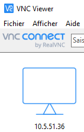
Il faut désormais remplir le nom d'utilisateur ainsi que le mot de passe.
Par défaut, le nom d’utilisateur est pi, et le mot de passe raspberry.
Si vous allez vous connecter régulièrement au raspberry je conseille de cocher la case Mémoriser le mot de passe.
Une fois les champs remplis appuyez sur OK.
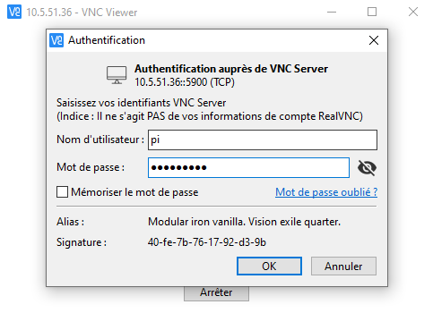
Vous voilà connecté au raspberry pi!
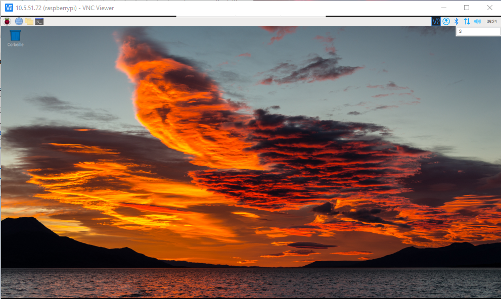
Raspap
Afin d’installer Raspap sur le raspberry, commencez par être sûr que votre raspberry est à jour.
Si votre raspberry ‘s’arrête’ pendant l’installation des packets, lisez la dernière ligne et appuyez sur enter (utilise la valeur par défaut).
sudo apt-get update
sudo apt-get full-upgrade
# !Redémarre le raspberrry!
sudo reboot
Une fois le raspberry redémarré, utilisez cette commande pour mettre la bonne localisation de votre raspberry.
sudo raspi-config
Une fenêtre s’ouvrira, avec les flèches directionnelles sélectionnez le 5e point Localisation Options.
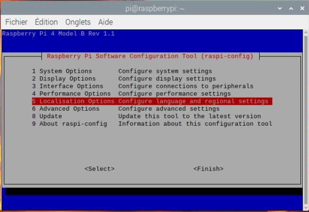
Ensuite, sélectionnez la dernière option WLAN Country.
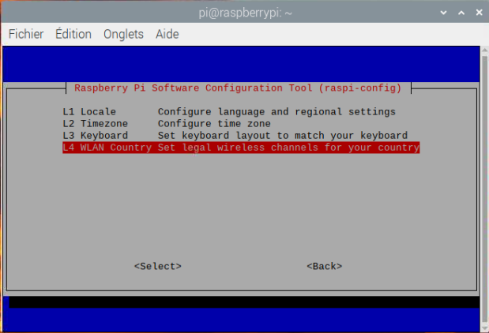
Veuillez sélectionner dans le pays auquel vous vous trouvez. (En Suisse pour ma part)
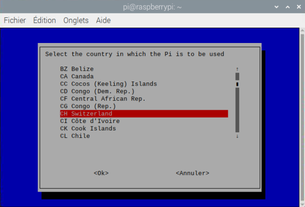
Maintenant, cette fenêtre n’est qu’une validation du pays, appuyez sur Ok.
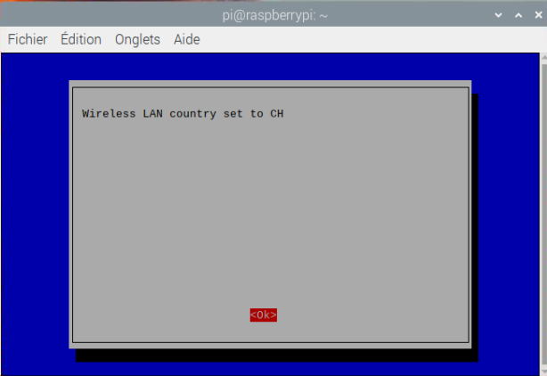
Ensuite, acceptez le redémarrage, ainsi les modifications seront comptabilisées. Appuyez sur Oui.

Dès que le raspberry pi a redémarré, ouvrez un terminal de commande et lancez cette commande:
curl -sL https://install.raspap.com | bash
De temps en temps, la console vous demandera si vous voulez activer certaines fonctionnalités de raspap.
Installing lighttpd directory: /var/www/html? [Y/n]
Par défaut, la valeur est Y, et je conseille de la laisser ainsi.
sur toutes les questions, appuyez sur Y, jusqu’à ce que vous arriviez à ce message:
The system needs to be rebooted as a final step, reboot now? [Y/n]
/!\ Attention /!\
Si vous appuyez sur Y, votre raspberry pi redémarrera. Pensez à bien avoir sauvegardé ce que vous faisiez avant de redémarrer.
Si tout est sauvegardé, appuyez sur Y.
Une fois le raspberry redémarrer, vous pouvez vous connecter avec votre téléphone sur l’access-point que vous venez de créer.
Vous pouvez aussi accéder à la configuration du réseau en allant sur votre navigateur et en entrant l’adresse IP du raspberry (ifconfig). Par défaut, les identifiants de connexion sont:
| Nom | Valeur |
|---|---|
| Nom d’utilisateur | admin |
| Mot de passe | secret |
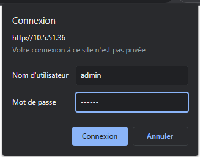
Vous accéderez à cette page. Je vous laisserais ici gérer votre réseau.
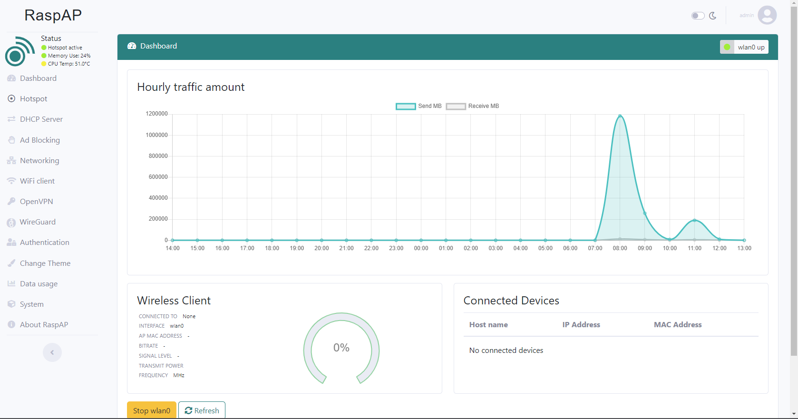
VS Code
Voici comment faire pour avoir l’éditeur VS Code pour raspberry pi.
Allez en premier dans les Préférences -> Recommended Software.
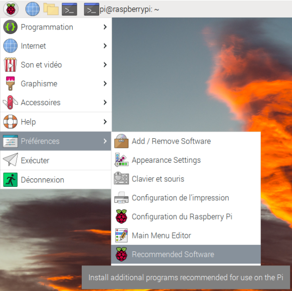
La fenêtre Recommended Software va s’ouvrir, allez tout en bas de l’ascenseur.

Cochez Visual Studio Code pour l’activer.
Une fois que c’est fait, appuyez sur Apply.
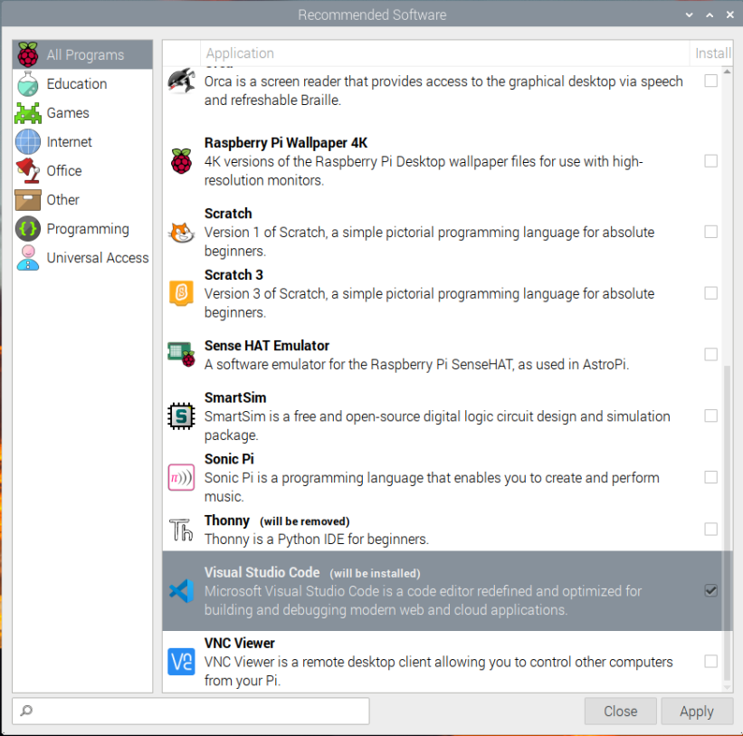
Normalement, une fois l’installation terminée, l’application devrait apparaître dans le menu Programmation -> Visual Studio Code
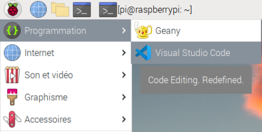
Au premier démarrage, l’application va vous proposer plusieurs réglages, à vous de les choisir selon vos préférences.
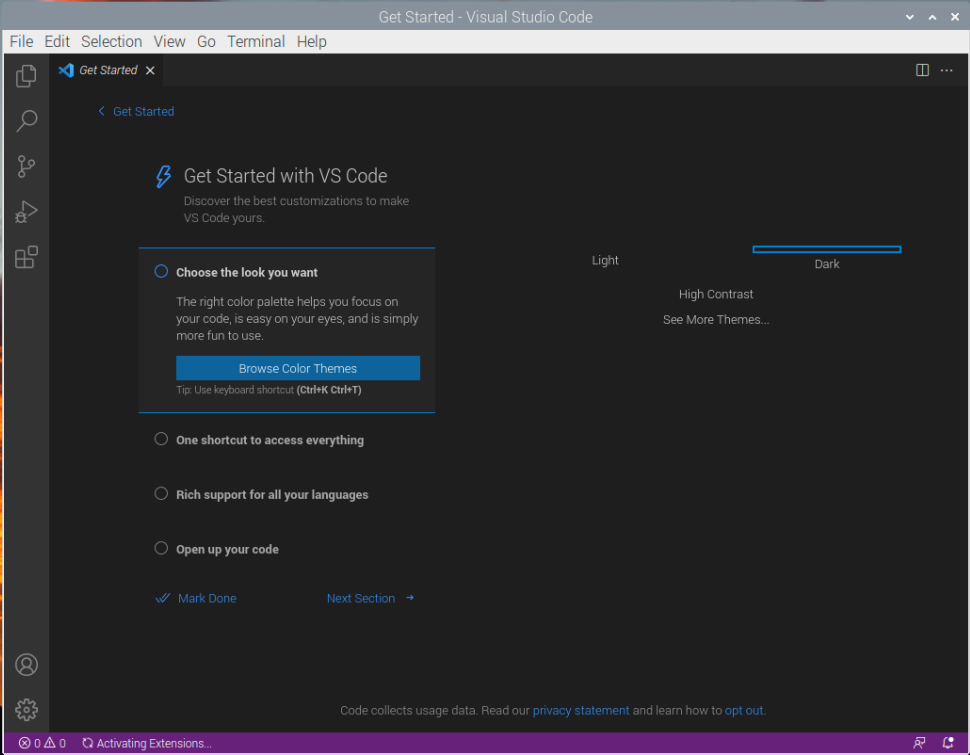
Librairies nécessaires
Il vous faut encore télécharger et installer diverses librairies nécessaires au bon fonctionnement de l’application.
# OpenCV, cette installation peut prendre jusqu’à plusieurs heures
pip3 install --upgrade pip
pip3 install -U numpy
pip3 install opencv-contrib-python
# Si il y a des erreurs, installer aussi ces librairies (ça peut corriger la plus grande partie des problèmes)
sudo apt-get install python3-opencv
sudo apt-get install libhdf5-dev
sudo apt-get install libhdf5-serial-dev
sudo apt-get install libatlas-base-dev
sudo apt-get install libjasper-dev
sudo apt-get install libqtgui4
sudo apt-get install libqt4-test
# Flask
pip3 install Flask
# Turbo-Flask
pip3 install Turbo-Flask
# Lidar
pip3 install adafruit-rplidar
# Matplotlib
python -m pip install -U matplotlib
# PID
pip3 install simple-pid
# PCA9685
pip3 install adafruit-circuitpython-pca9685
# MPU6050
pip3 install mpu6050-raspberrypi
# Servomoteur
pip3 install adafruit-circuitpython-motor
Activation des interfaces nécessaires
Pour commencer, accéder à Préférences -> Configuration du Raspberry Pi.
| Nom | État |
|---|---|
| SSH | Enabled |
| VNC | Enabled |
| SPI | Enabled |
| I2C | Enabled |
| Serial Port | Enabled |
| Serial Console | Disabled |
| 1-Wire | Disabled |
| remote GPIO | Enabled |
Puis ouvrez un terminal de commande et tapez:
sudo raspi-config
Allez dans Interface options.
Puis, activer la caméra.
Ensuite, accepter le redémarrage du raspberry pi.
Et finalement, dès que le raspberry pi aura redémarré. Relancez un terminal de commande et tapez:
git clone https://github.com/NickVanMarkes/Hexapode.git